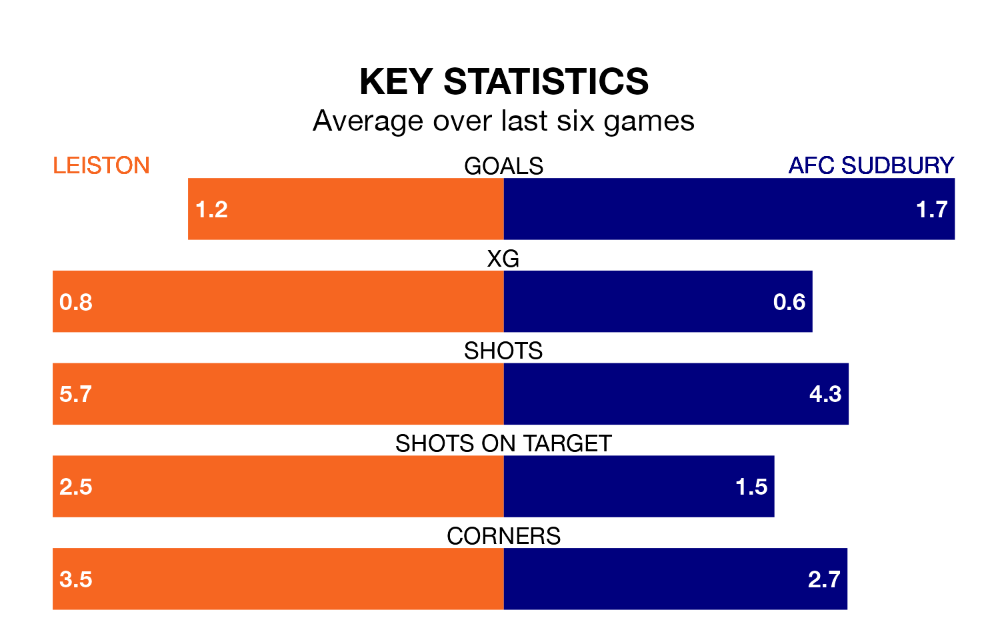

AFC Sudbury travel to Leiston on Saturday in Southern League Premier Central.
The visitors come into the game on the back of a draw in their last match, having tied with Barwell 0-0 away.
Leiston also drew their last match, 0-0 against AFC Telford United.
Sudbury are 18th in the table after 26 games, of which they have won seven and drawn seven, earning 28 points.
Leiston are two places ahead of the away team in 16th, with eight wins and seven draws putting them on 31 points.
With 34 goals in 26 games so far this season, Sudbury are scoring at below the league average rate with 1.3 goals per game. And they are conceding at an average rate, letting in 38 goals at a rate of 1.5 per game.
The hosts are also below average scorers, with 1.4 goals per game, compared to a league average of 1.5. They have conceded 1.5 goals per game.
Leiston are in mixed form in Southern League Premier Central, with two wins and two draws from their last six games.
With three wins and a draw over that period, Sudbury's form is slightly better – they have taken 10 points from 18, compared to Leiston's eight.
Updated: 09:07 (UTC), 24/01/24